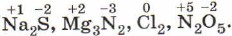
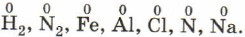

Степень окисления — это условный заряд атомов химического элемента в соединении,
вычисленный на основе предположения, что все соединения (и ионные, и ковалентно-полярные)
состоят только из ионов.
Степень окисления может иметь отрицательное, положительное или нулевое значения, которые
обычно ставятся над символом элемента сверху, например:

